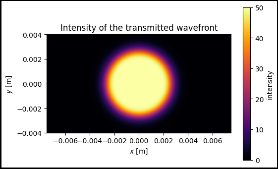
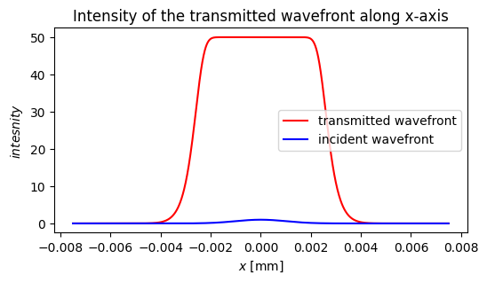

[1]:
import torch
from svetlanna import elements
from svetlanna import SimulationParameters
from svetlanna import Parameter
import matplotlib.pyplot as plt
from svetlanna import wavefront as w
from svetlanna.units import ureg
Use of a nonlinear element
The nonlinear element allows to control the intensity of the incident wavefront while preserving the phase distribution. For the aim to define the nonlinear element, it’s necessary to pass the intensity response_function. For example, we will use the sigmoid function as a response function and the gaussian beam as an incident wavefront:
[2]:
def response_sigmoid(x):
return 10 / (1 + torch.exp(-x)) - 5
Creating numerical mesh with using SimulationParameters class
[3]:
wavelength = 1064 * ureg.nm # wavelength, mm
lx = 15 * ureg.mm # screen size along x-axis, mm
ly = 8 * ureg.mm # screen size along y-axis, mm
Nx = 1200 # number of nodes along x-axis
Ny = 1100 # number of nodes along y-axis
x_length = torch.linspace(-lx / 2, lx / 2, Nx)
y_length = torch.linspace(-ly / 2, ly / 2, Ny)
# define simulation parameters
params = SimulationParameters(
axes={
'W': x_length,
'H': y_length,
'wavelength': wavelength
}
)
xv, yv = params.meshgrid(x_axis='W', y_axis='H')
Creating a Gaussian beam using svetlanna.wavefront.gaussian_beam
Let’s create a Gaussian beam that will fall on the nonlinear element:
[4]:
incident_wavefront = w.Wavefront.gaussian_beam(
simulation_parameters=params,
waist_radius=2. * ureg.mm,
distance=10 * ureg.cm
)
intensity_input = incident_wavefront.intensity
[5]:
fig, ax = plt.subplots(figsize=(6, 3))
im1 = ax.pcolormesh(xv, yv, intensity_input, cmap='inferno')
ax.set_aspect('equal')
ax.set_title('Intensity of the incident wavefront')
ax.set_xlabel('$x$ [m]')
ax.set_ylabel('$y$ [m]')
fig.colorbar(im1, label='intensity')
[5]:
<matplotlib.colorbar.Colorbar at 0x1d901aa16d0>

Creating nonlinear element using svetlanna.elements.NonlinearElement
In this section we will create a nonlinear element with determined intensity response_function:
[6]:
nl_element = elements.NonlinearElement(
simulation_parameters=params,
response_function=response_sigmoid
)
transmitted_wavefront = nl_element.forward(incident_wavefront=incident_wavefront)
intensity_output = transmitted_wavefront.intensity
[7]:
fig, ax = plt.subplots(figsize=(6, 3))
im1 = ax.pcolormesh(xv, yv, intensity_output, cmap='inferno')
ax.set_aspect('equal')
ax.set_title('Intensity of the transmitted wavefront')
ax.set_xlabel('$x$ [m]')
ax.set_ylabel('$y$ [m]')
fig.colorbar(im1, label='intensity')
[7]:
<matplotlib.colorbar.Colorbar at 0x1d901ac6510>

[8]:
fig, ax = plt.subplots(figsize=(6, 3), edgecolor='black', linewidth=3,
frameon=True)
ax.set_title("Intensity of the transmitted wavefront along x-axis")
ax.plot(xv[int(Ny/2)], intensity_output[int(Ny/2)], color='red', label="transmitted wavefront")
ax.plot(xv[int(Ny/2)], intensity_input[int(Ny/2)], color='blue', label="incident wavefront")
ax.legend()
ax.set_xlabel('$x$ [m]')
ax.set_ylabel('$intesnity$')
[8]:
Text(0, 0.5, '$intesnity$')

Training the parameters of the response function
If it’s necessary to train parameters of the response function, you can pass them into nonlinear element __init__ method using Dict and Parameter object. Parameter of other types can not be trained.
[9]:
def arbitrary_function(x, parameter1, parameter2, parameter3):
return parameter1 / (1 + torch.exp(-x * parameter2)) + parameter3 - 150
nl_to_train = elements.NonlinearElement(
simulation_parameters=params,
response_function=arbitrary_function,
response_parameters={
"parameter1": Parameter(100.),
"parameter2": Parameter(40.),
"parameter3": 100.
}
)
output_field_to_train = nl_to_train.forward(incident_wavefront=incident_wavefront)
intensity_output_to_train = output_field_to_train.intensity
[10]:
fig, ax = plt.subplots(figsize=(6, 4), edgecolor='black', linewidth=3,
frameon=True)
im1 = ax.pcolormesh(xv, yv, intensity_output_to_train.detach(), cmap='inferno')
ax.set_aspect('equal')
ax.set_title('Intensity of the transmitted wavefront')
ax.set_xlabel('$x$ [m]')
ax.set_ylabel('$y$ [m]')
fig.colorbar(im1, label='intensity')
[10]:
<matplotlib.colorbar.Colorbar at 0x1d902cd3990>

[11]:
fig, ax = plt.subplots(figsize=(6, 3))
ax.set_title("Intensity of the transmitted wavefront along x-axis")
ax.plot(xv[int(Ny/2)], intensity_output_to_train[int(Ny/2)].detach(), color='red', label="transmitted wavefront")
ax.plot(xv[int(Ny/2)], intensity_input[int(Ny/2)], color='blue', label="incident wavefront")
ax.legend()
ax.set_xlabel('$x$ [mm]')
ax.set_ylabel('$intesnity$')
[11]:
Text(0, 0.5, '$intesnity$')
